Управление питанием
Главная задача — научиться управлять своим питанием: понимать, сколько вы едите и сколько тратите, и принимать решения осознанно.
Онлайн-марафон
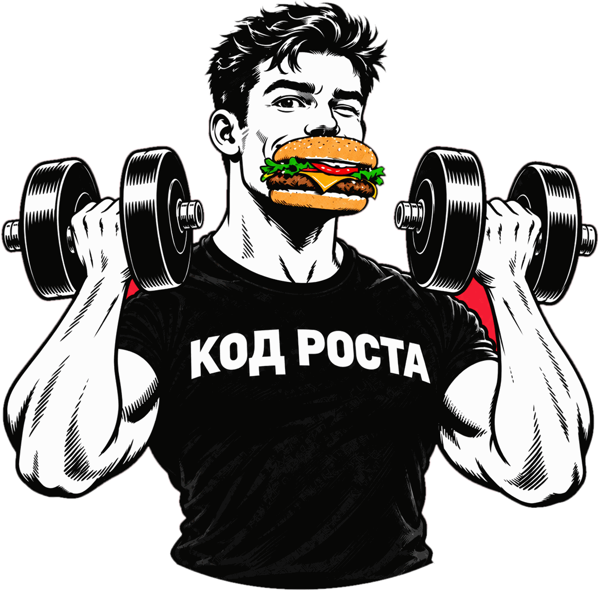
Считаем калорииМеняем привычкиПоддерживаем друг друга
«Калориметр» — онлайн-марафон клуба «Код Роста», и это уже третий поток. Участники ведут дневник питания, следят за активностью и раз в неделю сдают честный отчёт. За дни в дефиците, тренировки и полезные привычки начисляются баллы — в личном и командном зачёте.
Вся жизнь марафона — в закрытой Telegram-группе: там делимся рецептами, обсуждаем, что получается, и помогаем тем, кому сложнее. Отчёты сдаются через бота @KalorimetrBot — он сам считает баллы и ведёт рейтинг.
Главная задача — научиться управлять своим питанием: понимать, сколько вы едите и сколько тратите, и принимать решения осознанно.
После марафона остаётся не только результат, но и понимание, как его поддерживать.
Рядом люди с той же целью. Поддержка, советы, мотивация. Капитан команды помогает не сойти с дистанции.
Баллы, рейтинг и командный зачёт дают повод побороться и за себя, и за своих. Призы и подарки — не только приятный бонус, но и хорошая мотивация.
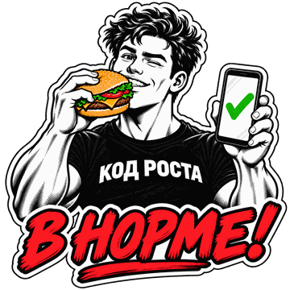
Без крайностей. Голодание и экстремальные диеты не входят в нашу программу. Оскорбления и обесценивание чужих результатов — неприемлемы.
Считаете калории с помощью ИИ — достаточно сфотографировать еду.
Прогулка, фитнес, йога — всё идёт в зачёт.
Сдаёте отчёт через умный бот — он сам считает баллы.
Радуетесь своему телу.
За питание, тренировки и отчёты в срок начисляются баллы. Умный бот всё считает сам и ведёт рейтинг: видно своё место, результат команды и как они меняются от недели к неделе.
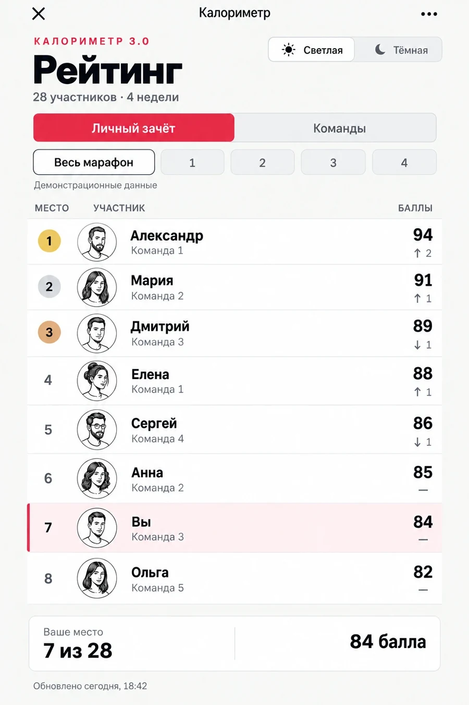
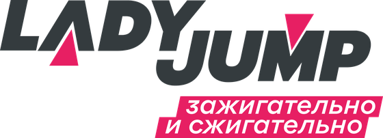
Сеть фитнес-студий LADY JUMP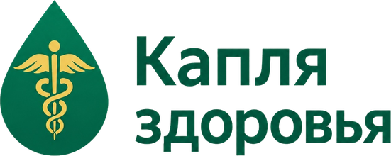
Клиника превентивной медицины «Капля Здоровья»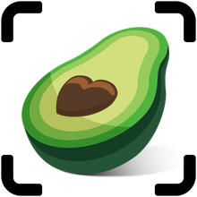
CalZen — рекомендованный дневник питания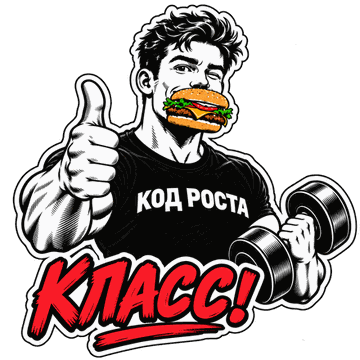
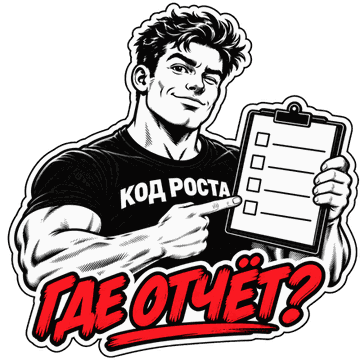
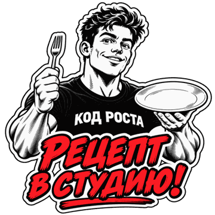
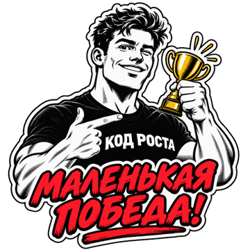
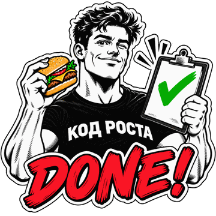
Присоединяйтесь к группе марафона — там все подробности и запись. Остались вопросы — напишите менеджеру клуба.